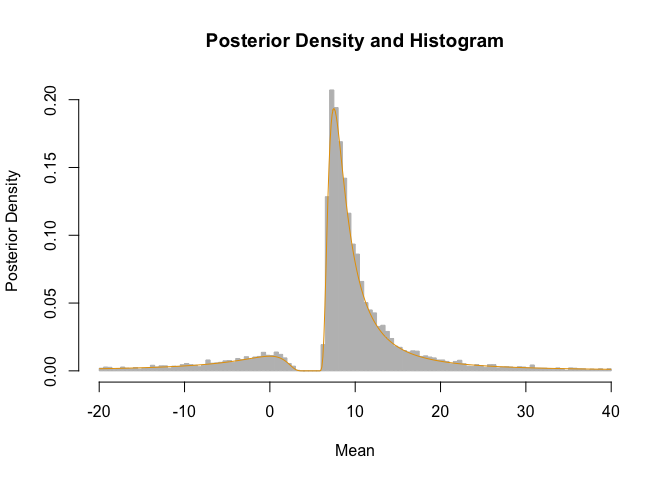

Provides different interval estimates of a location parameter when the sample size is one or more. These include classical methods when n=1, new Bayesian analogues of these classical methods, and extensions of these methods to larger sample sizes in the normal case. Other functions calculate Bayes factors based on t-statistics, and implement the (generalized) inverse normal distribution (and other inverse distributions). See Gerard (2026) for details of these methods.
n=1 confidence interval
If we observe \(X = 10\) and we have prior guess that the mean is around 5, then the resulting 95% CI based on a normal model is
Its full posterior distribution based on a probability matching prior can be calculated using the n1post family of functions. For example, the median and 95% credible interval is
qn1post(p = c(0.025, 0.5, 0.975), A = 5, obs = 10, nu = 1, fam = "normal")
#> [1] -40.755 8.549 55.773Some random posterior draws and density curve is
samp <- rn1post(n = 10000, A = 5, obs = 10, nu = 1, fam = "normal")
samp <- samp[samp > -20 & samp < 40]
x <- seq(-20, 40, length.out = 500)
y <- dn1post(x = x, A = 5, obs = 10, nu = 1, fam = "normal")
graphics::hist(
samp,
freq = FALSE,
breaks = 200,
border = "grey",
col = "grey",
main = "Posterior Density and Histogram",
xlab = "Mean",
ylab = "Posterior Density"
)
graphics::lines(x, y, type = "l", col = "#E69F00")
If we just want to assume that \(X\) comes from any symmetric unimodal distribution, a 95% CI for the mode is
ci1(x = 10, A = 5, family = "uniform")
#> x center lower upper
#> [1,] 10 7.5 -87.43 102.4See more functionality by running
browseVignettes("nisone")References
- Gerard, D. (2026). Constructing and extending n = 1 Bayesian confidence intervals for location parameters in location-scale families. arXiv Preprint. doi:10.48550/arXiv.2607.25007